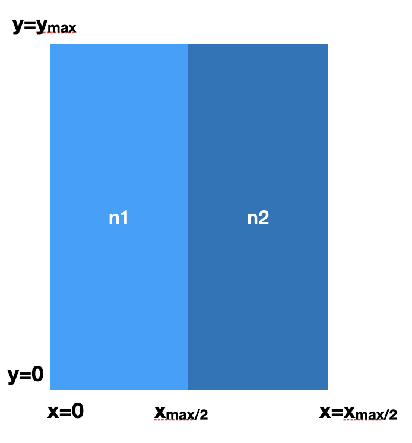
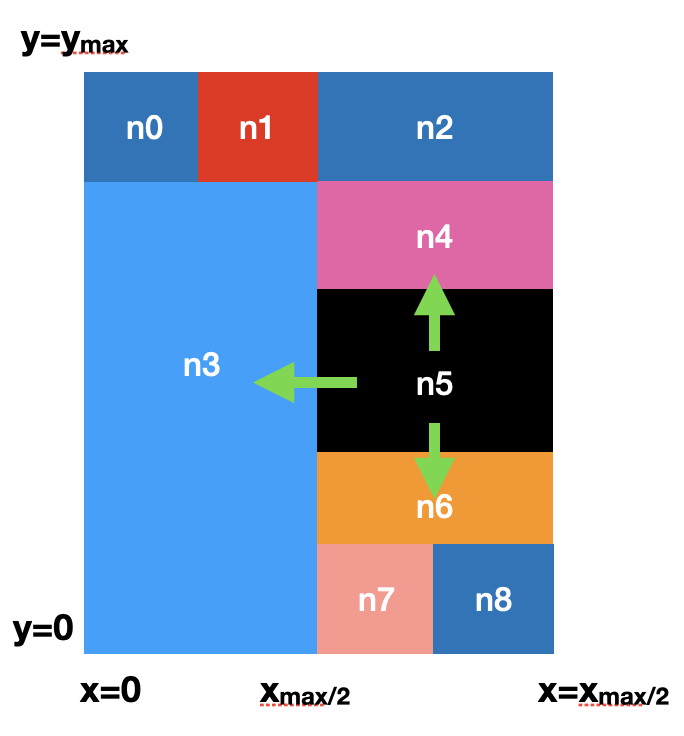
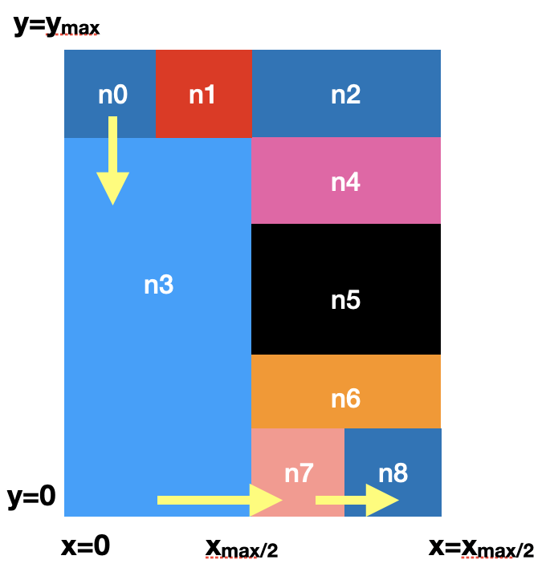
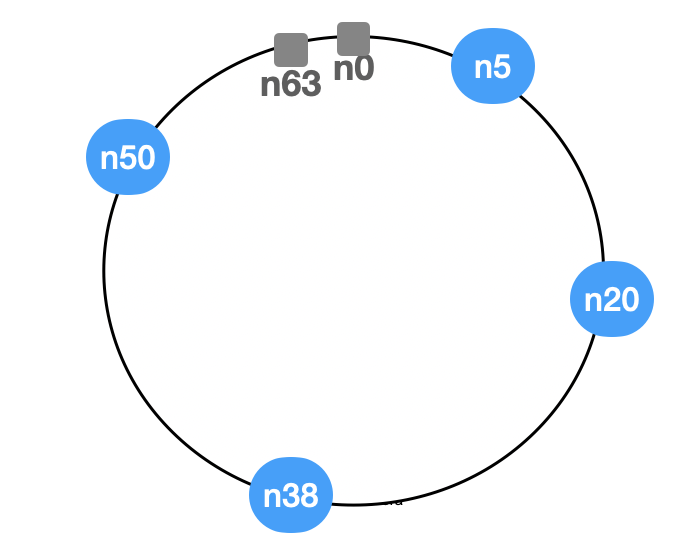

Localización y particionado de datos en sistemas distribuidos
A local hash table maps a key to a memory location:
In a distributed system, two separate questions arise:
The DHT mainly provides exact-key lookup; by itself, it does not provide replication, transactions, or consistency.
| Strategy | Example | Location state | Lookup cost |
|---|---|---|---|
| Centralized directory | Napster | One server knows every peer | (O(1)), but centralized |
| Unstructured network | Gnutella | Each peer knows some neighbors | Depends on flooding |
| Structured DHT | CAN, Chord | State distributed among nodes | Bounded by the overlay |
An overlay network is a logical graph built on top of the IP network. Logical neighbors need not be physical neighbors.
Napster separated the control plane from the data plane:
Advantages
Limitations
Data transfer was P2P, but lookup was not decentralized.
Each peer maintains connections to a small set of neighbors. No rule determines where a key is stored (Ripeanu 2001).
If the data is not stored locally, the node propagates a query:
Flooding supports more flexible queries than a DHT, but a search may generate many messages and does not guarantee that every result will be found.
The cost of flooding grows with the number of nodes reached:
Gnutella introduced ultrapeers, while Kazaa used supernodes: more capable nodes aggregated indexes from leaf nodes. This reduces traffic but reintroduces hierarchy.
A DHT changes the question:
Instead of asking “who has this key?”, it defines in advance “who should be responsible for this key?”
A distributed hash table provides two conceptual operations:
Both nodes and keys are mapped into the same identifier space. The protocol assigns each identifier to a node and maintains routes to that node.
Desirable properties:
Uniform distribution depends on the hash function; a DHT is poorly suited to range queries or queries on secondary attributes.
CAN (Content Addressable Network) represents the key space as a (\(d\))-dimensional torus and divides it into zones (Ratnasamy et al. 2001).
In the figure, each color represents the zone assigned to one node.

To add a node:
The local split avoids redistributing the entire table.

lookup(k)
With (\(N\)) nodes and (\(d\)) dimensions, the average path length is:
\(O\left(d\,N^{1/d}\right)\)
Increasing (\(d\)) shortens routes but increases neighborhood state.

Chord arranges (\(m\))-bit identifiers in a ring modulo (\(2^m\)) (Stoica et al. 2001).
hash(node address) places each node on the ring.hash(key) places each key on the same ring.successor(k): the first clockwise node whose identifier is \(\ge k\).With consistent hashing, when a node joins or leaves, only the keys in a contiguous portion of the ring change owners (Karger et al. 1997).
Example with \(m=6\): there are 64 possible positions and only four active nodes.
For example, node \(n_5\) stores the keys with identifiers 63 and 0.

Knowing only the successor would be correct, but a lookup might traverse \(O(N)\) nodes.
Each node \(n\) maintains a finger table. Entry \(i\) points to:
\(\operatorname{successor}\left(n + 2^{i-1}\right)\)
To look up \(k\), the request is forwarded to the finger that most closely precedes \(k\). With stable tables:
Successor lists and periodic stabilization protocols repair the ring after nodes join or fail (Stoica et al. 2001).
The DHT determines where a key should be stored. A distributed database must still decide:
Therefore, a DHT is one component of a storage system, not a complete database.
Dynamo adopts a consistent-hashing ring to partition data, but it does not use Chord as a lookup protocol among anonymous clients (DeCandia et al. 2007).
The condition \(R+W>N\) promotes quorum overlap, but it does not by itself make every operation linearizable.
hbase:meta maps each range to its current server (Chang et al. 2006).The table is designed around the query: “reviews for one author, ordered by year.”
CREATE KEYSPACE books
WITH replication = {
'class': 'NetworkTopologyStrategy',
'datacenter1': 3
};
CREATE TABLE books.reviews_by_author (
author_id text,
review_year int,
review_id uuid,
reviewer_id text,
rating tinyint,
PRIMARY KEY ((author_id), review_year, review_id)
) WITH CLUSTERING ORDER BY (review_year DESC);author_id selects one partition; review_year and review_id order rows inside it. Cassandra does not perform a cluster-wide scan for this query.
Apache Cassandra combines ideas from Dynamo’s partitioning and replication with Bigtable’s sorted data model (Lakshman y Malik 2010).
Data model
Distributed storage
ONE, QUORUM, ALL, etc.) specifies how many replicas must acknowledge an operation.import happybase
connection = happybase.Connection('127.0.0.1', 55003) # Thrift port
connection.create_table('table-name', {'family': dict()})
connection.tables()
table = connection.table('table-name')
table.put(
b'row-key',
{b'family:qual1': b'value1', b'family:qual2': b'value2'}
)
for k, data in table.scan():
print(k,data)Logical data model
The family does not select the RegionServer: all families of a row belong to the same region.
Physical lookup
hbase:meta maps that region to its current RegionServer.hbase:meta again.| System | Organization | State per node | Typical lookup |
|---|---|---|---|
| Napster | Centralized directory | Global at the server | \(O(1)\) |
| Gnutella | Unstructured graph | Neighbors | Unbounded; limited by TTL |
| CAN | \(d\)-dimensional space | \(O(d)\) | \(O(dN^{1/d})\) |
| Chord | Ring + fingers | \(O(\log N)\) | \(O(\log N)\) |
These asymptotic costs describe the overlay. In production, physical latency, heterogeneous nodes, hot data, churn, and rebalancing costs also matter.
In the Chord ring shown in the figure, with \(m=6\):
In each answer, distinguish between partitioning, routing, and replication.